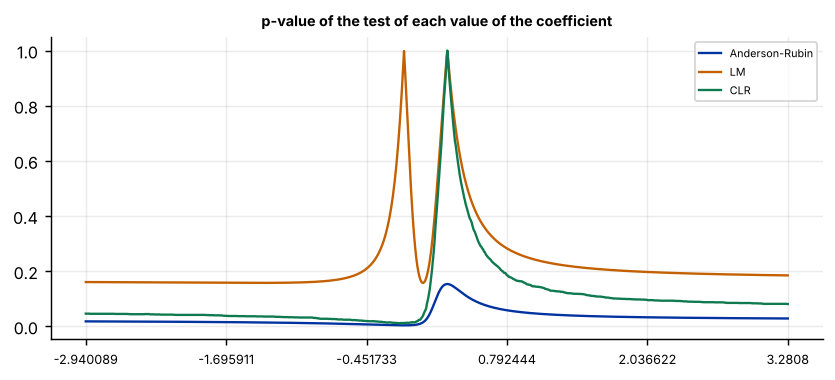

Run this model on your own data in Open Econometric Systems →
Step 1The question and the tests
What can you conclude about the coefficient when the instruments might be weak? In \(y = \beta x + w'\gamma + u\) with \(x = z'\pi + w'\delta + v\), 2SLS is a ratio of reduced-form coefficients, and when \(\pi\) is close to zero the ratio is badly behaved: biased toward OLS, with a non-normal distribution. The weak-instrument-robust tests avoid the ratio. To test \(\beta=\beta_0\), define the residual \(y-\beta_0 x\) and ask whether the instruments predict it. The Anderson-Rubin (AR) statistic is the Wald test of that regression and is valid for any \(\pi\). The Lagrange multiplier (LM) statistic of Kleibergen uses one direction in instrument space and is more powerful with strong instruments. The conditional likelihood ratio (CLR) test of Moreira conditions on the part of the data that carries the information about instrument strength. The confidence set contains every \(\beta_0\) that is not rejected, and it can be wide, bounded away from 2SLS, or unbounded, which is the correct answer when the data do not identify \(\beta\).
Three checks before you report an IV estimate
- How strong is the first stage? An F statistic below 10 is the usual warning. Report it, together with the robust sets if it is low.
- Do the 2SLS and robust sets agree? If they do, nothing is lost. If they do not, believe the robust one.
- Are the instruments valid? With more instruments than endogenous variables, the minimum of the AR statistic is an overidentification test. A rejection means the instruments disagree with each other.
How to write it: the model
We estimate the return to a year of schooling in the Card (1995) data on 2,215 men, instrumenting years of education with proximity to a two-year college and to a four-year college. The wage equation includes experience and its square and indicators for race, urban residence and the South. Because the first-stage F statistic is low, we report, in addition to 2SLS and LIML confidence intervals, the weak-instrument-robust confidence sets from the Anderson-Rubin, Lagrange multiplier and conditional likelihood ratio tests (Andrews, Moreira and Stock 2006), inverted over a grid of values of the return to schooling. The conditional likelihood ratio p-values are simulated with 1,000 draws. We also use the minimum of the Anderson-Rubin statistic as an overidentification test.
Step 2Load the data and look at the first stage
import numpy as np
import pandas as pd
import oes_engine as oes # pip install -e open-econometric-systems/oes-engine
data = open("card_full.csv").read()
df = pd.read_csv("card_full.csv")
controls = ["exper", "expersq", "black", "smsa", "south"]
print(len(df), "men; mean education", round(df.educ.mean(), 2), "years; mean log wage", round(df.lwage.mean(), 3))
print("share near a four-year college:", round(df.nearc4.mean(), 3), " near a two-year college:", round(df.nearc2.mean(), 3))
print(df[["educ", "lwage", "nearc4", "nearc2", "fatheduc", "motheduc"]].corr().round(2).loc[["educ", "lwage"]])
ols = oes.run("iv", data, dict(outcome="lwage", treat="educ", instruments=["nearc4"], controls=controls))
print("OLS return to a year of schooling:", ols["tables"][0]["rows"][1][1:3])2215 men; mean education 13.63 years; mean log wage 6.286
share near a four-year college: 0.69 near a two-year college: 0.438
educ lwage nearc4 nearc2 fatheduc motheduc
educ 1.00 0.28 0.12 0.05 0.47 0.44
lwage 0.28 1.00 0.13 0.11 0.19 0.20
OLS return to a year of schooling: [0.076, 0.0043]How to read it
The sample has 2,215 men with complete records, mean education 13.6 years and mean log wage 6.29. Sixty-nine percent grew up near a four-year college and 44% near a two-year college. Education is correlated 0.12 with proximity to a four-year college and only 0.05 with proximity to a two-year college, against 0.47 and 0.44 with father's and mother's education. The OLS return to a year of schooling is 0.076 (standard error 0.0043). Near-college indicators are the instruments Card used, and their correlation with education is small, so weak instruments are the concern.
Step 3One instrument: all the tests give the same set
r1 = oes.run("weakiv", data, dict(outcome="lwage", treat="educ", instruments=["nearc4"], controls=controls))
oes.show(r1, "Effect of")
oes.show(r1, "First stage")
oes.show(r1, "Tests")Effect of educ on lwage: point estimates and weak-instrument-robust confidence sets
Estimate Std. err. 95% confidence set
Method
2SLS (Wald interval) 0.0971 0.0768 [-0.054, 0.248]
LIML (Wald interval) 0.0971 0.0768 [-0.054, 0.248]
Anderson-Rubin [-0.113, 0.369]
Lagrange multiplier (Kleibergen) [-0.113, 0.369]
Conditional likelihood ratio (= LM with one instrument) [-0.113, 0.369]
Note: Homoskedastic errors. The AR, LM and CLR sets are valid whatever the strength of the instruments; the Wald intervals are not. The grid is wide (at least 40 standard errors either side of 2SLS); a set that reaches its edge is reported with an infinite end.
First stage
Value
Statistic
First-stage F (joint significance of the instruments) 6.31
p-value 0.0121
Number of instruments 1
Partial R-squared 0.0028
Rule of thumb F < 10: weak (Staiger-Stock); AR, LM or CLR sets should be reported
Tests
Statistic p-value Detail
Test
Anderson-Rubin test of beta = 0 1.3969 0.2372 chi-squared(1); valid with weak instrumentsHow to read it
With proximity to a four-year college as the only instrument, the first-stage F statistic is 6.31 (partial R-squared 0.003), below the rule-of-thumb 10. The 2SLS return is 0.097 with standard error 0.077, a Wald interval of -0.054 to 0.248. With one instrument the Anderson-Rubin, LM and CLR tests coincide, and their set runs from -0.113 to 0.369, about 60% wider than the Wald interval. The Anderson-Rubin test does not reject a zero return (p = 0.24), and the OLS value of 0.076 is well inside the set. A single weak instrument cannot rule out a negative or a very large return.
Step 4Two weak instruments: the sets diverge
r2 = oes.run("weakiv", data, dict(outcome="lwage", treat="educ", instruments=["nearc4", "nearc2"], controls=controls, sims=2000))
oes.show(r2, "Effect of")
oes.show(r2, "First stage")
oes.show(r2, "Tests")
oes.plot(r2, "p-value of the test", ncols=1, size=(6.5, 3))Effect of educ on lwage: point estimates and weak-instrument-robust confidence sets
Estimate Std. err. 95% confidence set
Method
2SLS (Wald interval) 0.1704 0.0778 [0.018, 0.323]
LIML (Wald interval) 0.2635 0.1375 [-0.006, 0.533]
Anderson-Rubin [0.119, 0.948]
Lagrange multiplier (Kleibergen) unbounded (the whole grid)
Conditional likelihood ratio (Moreira) [0.061, inf]
Note: Homoskedastic errors. The AR, LM and CLR sets are valid whatever the strength of the instruments; the Wald intervals are not. The grid is wide (at least 40 standard errors either side of 2SLS); a set that reaches its edge is reported with an infinite end.
First stage
Value
Statistic
First-stage F (joint significance of the instruments) 3.78
p-value 0.023
Number of instruments 2
Partial R-squared 0.0034
Rule of thumb F < 10: weak (Staiger-Stock); AR, LM or CLR sets should be reported
Tests
Statistic p-value Detail
Test
Anderson-Rubin test of beta = 0 9.9848 0.0068 chi-squared(2); valid with weak instruments
Overidentification (minimum of the AR statistic, 1 df) 3.7496 0.0528 H0: all instruments are valid; a rejection makes the AR set narrow or empty
How to read it
Adding proximity to a two-year college makes the first stage weaker, not stronger: F falls to 3.78 (p = 0.023). The 2SLS estimate rises to 0.170 with a Wald interval of 0.018 to 0.323, which looks significant. LIML gives 0.264 (standard error 0.138), well away from 2SLS, which is itself a sign of weak instruments. The robust sets tell a different story about precision: the Anderson-Rubin set is 0.119 to 0.948, the conditional likelihood ratio set is 0.061 to infinity, and the LM set is unbounded. The robust tests exclude a zero return (the AR test of beta = 0 has p = 0.007, and the AR and CLR sets exclude zero), but they say nothing about an upper bound: a return of 0.9 per year of schooling is not rejected. The Wald interval is about a third as wide as the Anderson-Rubin set, and the extra width is the cost of weak instruments that the Wald interval hides. The overidentification test is borderline (p = 0.053).
Step 5Strong instruments that may not be valid
r3 = oes.run("weakiv", data, dict(outcome="lwage", treat="educ", instruments=["fatheduc", "motheduc"], controls=controls, sims=2000))
r4 = oes.run("weakiv", data, dict(outcome="lwage", treat="educ", instruments=["nearc4", "nearc2", "fatheduc", "motheduc"], controls=controls, sims=2000))
for name, rr in [("parents' education", r3), ("all four instruments", r4)]:
print(name)
oes.show(rr, "Effect of")
print("first-stage F:", rr["tables"][1]["rows"][0][1], " tests:", [(t[0][:40], t[1], t[2]) for t in rr["tables"][2]["rows"]])parents' education
Effect of educ on lwage: point estimates and weak-instrument-robust confidence sets
Estimate Std. err. 95% confidence set
Method
2SLS (Wald interval) 0.0994 0.0128 [0.074, 0.124]
LIML (Wald interval) 0.0996 0.0129 [0.074, 0.125]
Anderson-Rubin [0.074, 0.124]
Lagrange multiplier (Kleibergen) [0.076, 0.124]
Conditional likelihood ratio (Moreira) [0.076, 0.124]
Note: Homoskedastic errors. The AR, LM and CLR sets are valid whatever the strength of the instruments; the Wald intervals are not. The grid is wide (at least 40 standard errors either side of 2SLS); a set that reaches its edge is reported with an infinite end.
first-stage F: 126.6 tests: [('Anderson-Rubin test of beta = 0', 55.97, 0.0), ('Overidentification (minimum of the AR st', 2.0514, 0.1521)]
all four instruments
Effect of educ on lwage: point estimates and weak-instrument-robust confidence sets
Estimate Std. err. 95% confidence set
Method
2SLS (Wald interval) 0.0993 0.0127 [0.074, 0.124]
LIML (Wald interval) 0.1002 0.0129 [0.075, 0.126]
Anderson-Rubin [0.091, 0.111]
Lagrange multiplier (Kleibergen) [0.076, 0.126]
Conditional likelihood ratio (Moreira) [0.076, 0.126]
Note: Homoskedastic errors. The AR, LM and CLR sets are valid whatever the strength of the instruments; the Wald intervals are not. The grid is wide (at least 40 standard errors either side of 2SLS); a set that reaches its edge is reported with an infinite end.
first-stage F: 64.59 tests: [('Anderson-Rubin test of beta = 0', 63.1444, 0.0), ('Overidentification (minimum of the AR st', 8.7792, 0.0324)]How to read it
Parents' education is a strong instrument: F = 126.6, and every set is close to the Wald interval (0.074 to 0.124 for AR, 0.076 to 0.124 for LM and CLR), with an overidentification p-value of 0.15, so with strong instruments the robust sets cost nothing. Strength is not validity, though, because parents' education is correlated with family background and ability and may belong in the wage equation directly. Using all four instruments, F is 64.6 and 2SLS is 0.099 (0.013), but the overidentification test rejects (minimum of the AR statistic 8.78, p = 0.032), and the Anderson-Rubin set shrinks to 0.091 to 0.111, narrower than the Wald interval. That narrow set is not precision. The AR test has power against instruments that disagree, and here the near-college and parental-education instruments imply different returns, so the narrowness reflects a misspecified set of instruments. The LM and CLR sets, which look only at the direction in which the instruments are informative, stay at 0.076 to 0.126.
Step 6Write the results
How to write it: results
With proximity to a four-year college as the instrument, the first-stage F statistic is 6.3, and the 2SLS return to a year of schooling is 0.097 (standard error 0.077). The 95% Anderson-Rubin confidence set, which is valid for any instrument strength, runs from -0.113 to 0.369 and does not reject a zero return (p = 0.24). Adding proximity to a two-year college lowers the first-stage F statistic to 3.8; 2SLS then gives 0.170 (Wald interval 0.018 to 0.323), but the robust sets are much wider (Anderson-Rubin 0.119 to 0.948, conditional likelihood ratio 0.061 to infinity, LM unbounded), so the data do not bound the return from above. With parental education as instruments (F = 127) the robust sets coincide with the Wald interval (0.074 to 0.124); however, a joint model with all four instruments rejects overidentifying restrictions (p = 0.032), and we do not interpret the shrinking of the Anderson-Rubin set in that case as precision. Sets assume homoskedastic errors; the conditional likelihood ratio p-values use 2,000 simulation draws.
| Report | What | Where |
|---|---|---|
| Model | Instruments, controls, which sets and how they are computed | Step 1 |
| First stage | Strength of the instruments, OLS benchmark | Step 2 |
| Robust sets | AR, LM, CLR and Wald sets, one and two instruments | Steps 3-4 |
| Validity | Overidentification test, instruments that disagree | Step 5 |
References. Anderson, T. W. and Rubin, H. (1949), "Estimation of the Parameters of a Single Equation in a Complete System of Stochastic Equations," Annals of Mathematical Statistics 20. Moreira, M. (2003), "A Conditional Likelihood Ratio Test for Structural Models," Econometrica 71. Kleibergen, F. (2002), "Pivotal Statistics for Testing Structural Parameters in Instrumental Variables Regression," Econometrica 70. Andrews, D., Moreira, M. and Stock, J. (2006), "Optimal Two-Sided Invariant Similar Tests for Instrumental Variables Regression," Econometrica 74. Staiger, D. and Stock, J. (1997), "Instrumental Variables Regression with Weak Instruments," Econometrica 65. Card, D. (1995), "Using Geographic Variation in College Proximity to Estimate the Return to Schooling," in Aspects of Labour Market Behaviour, University of Toronto Press.